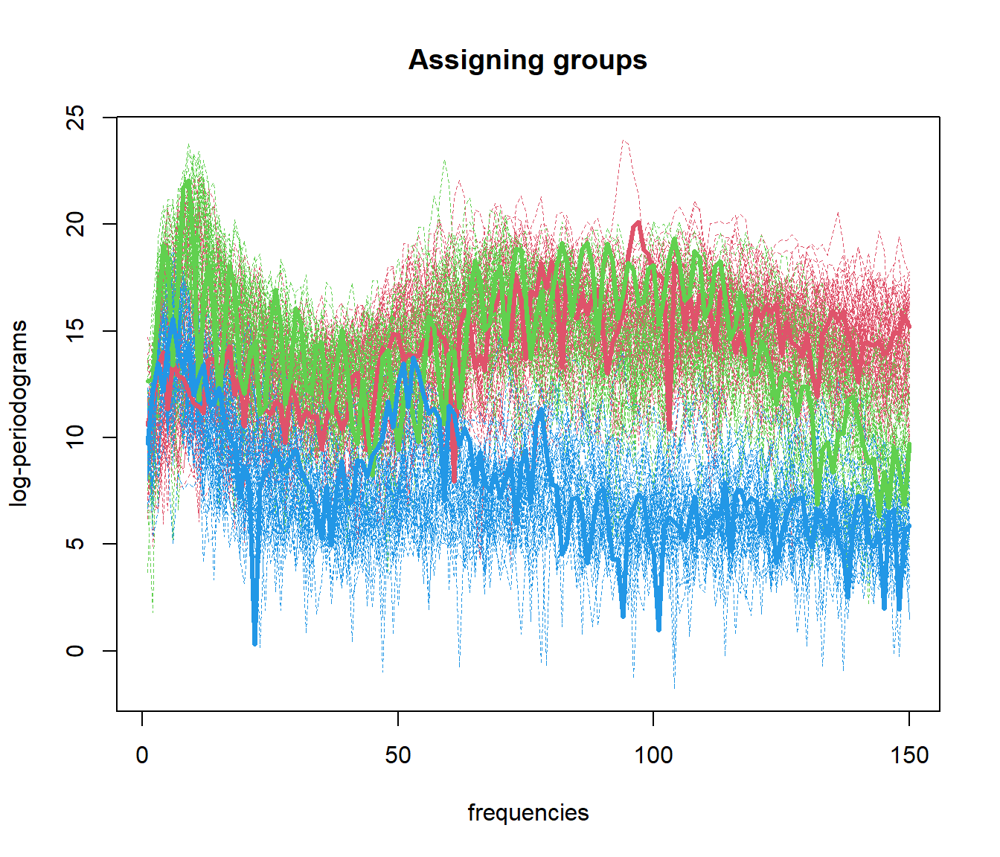
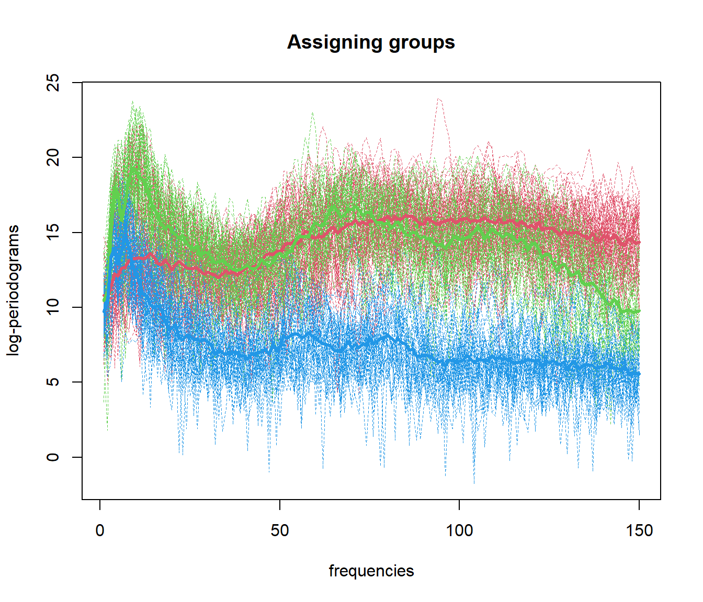
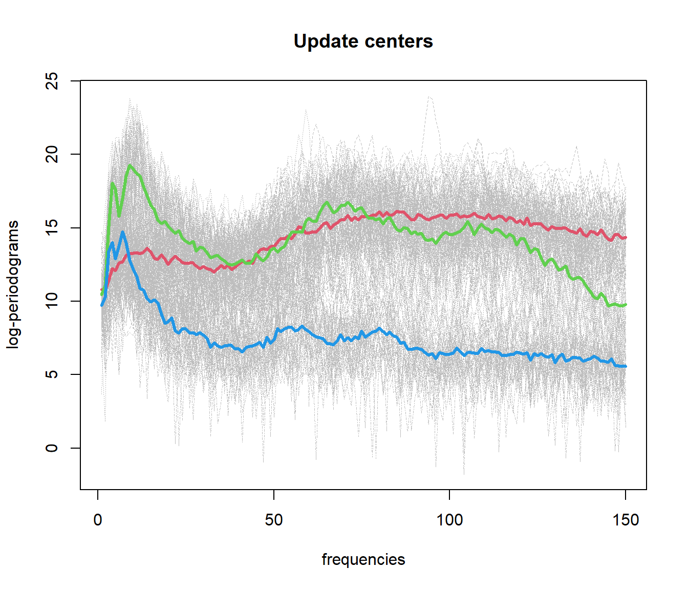
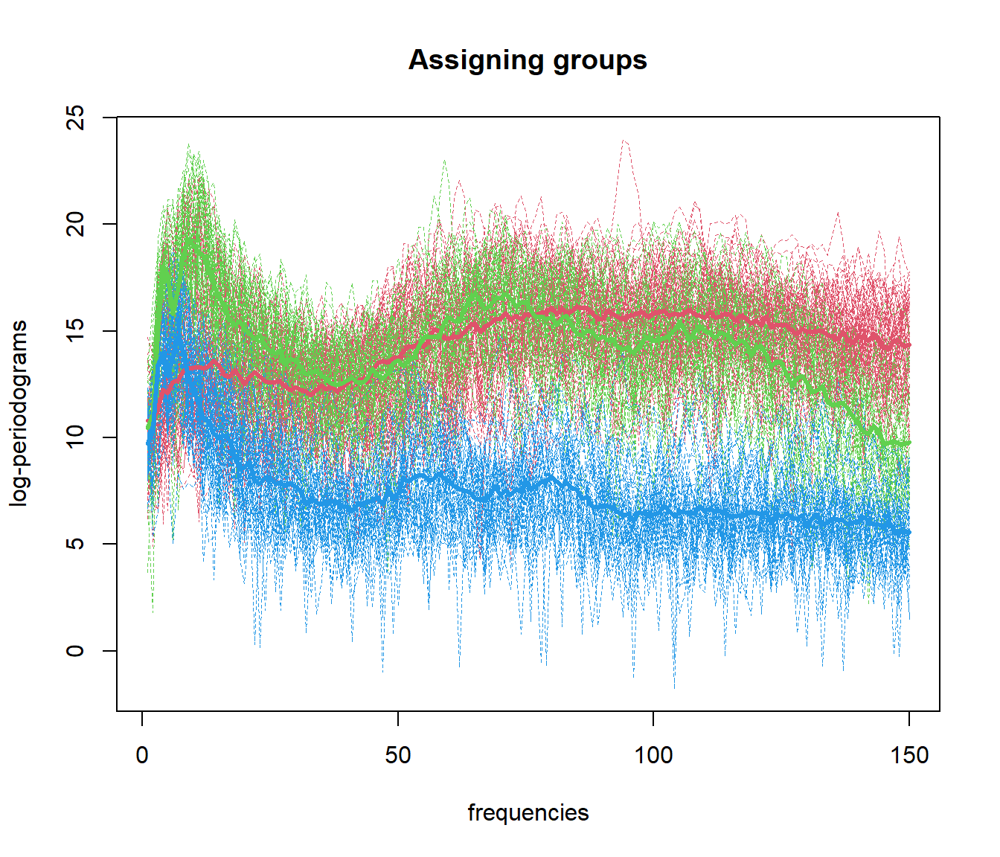
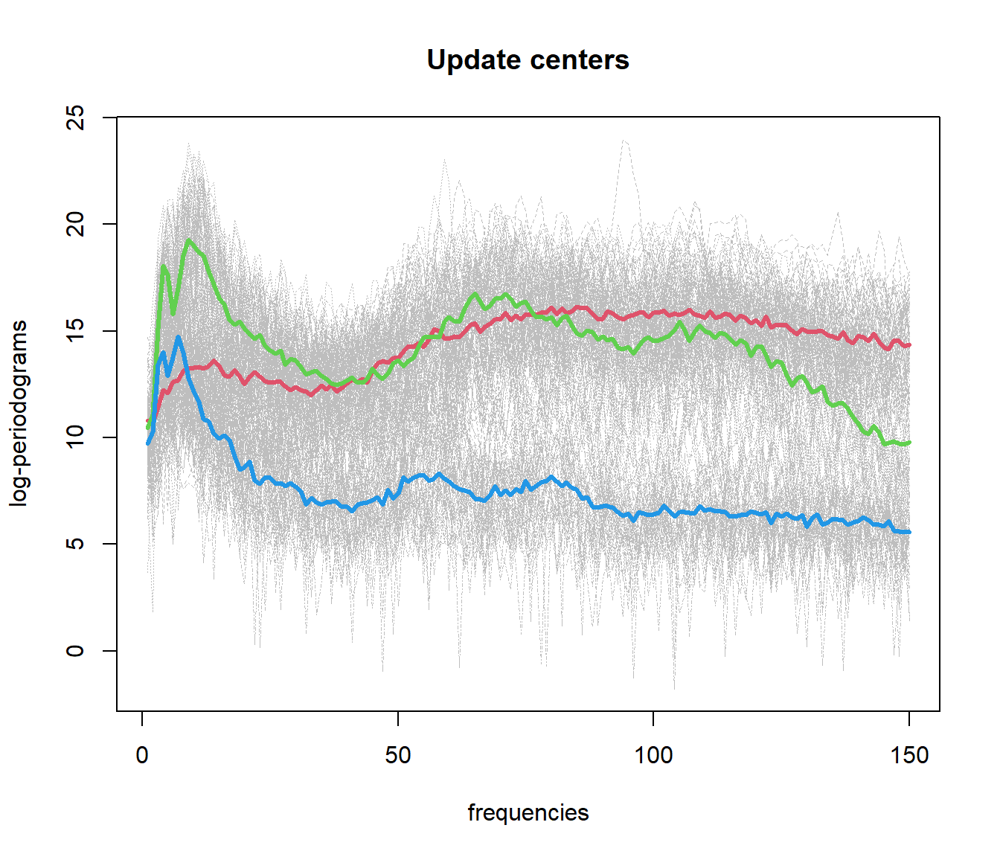
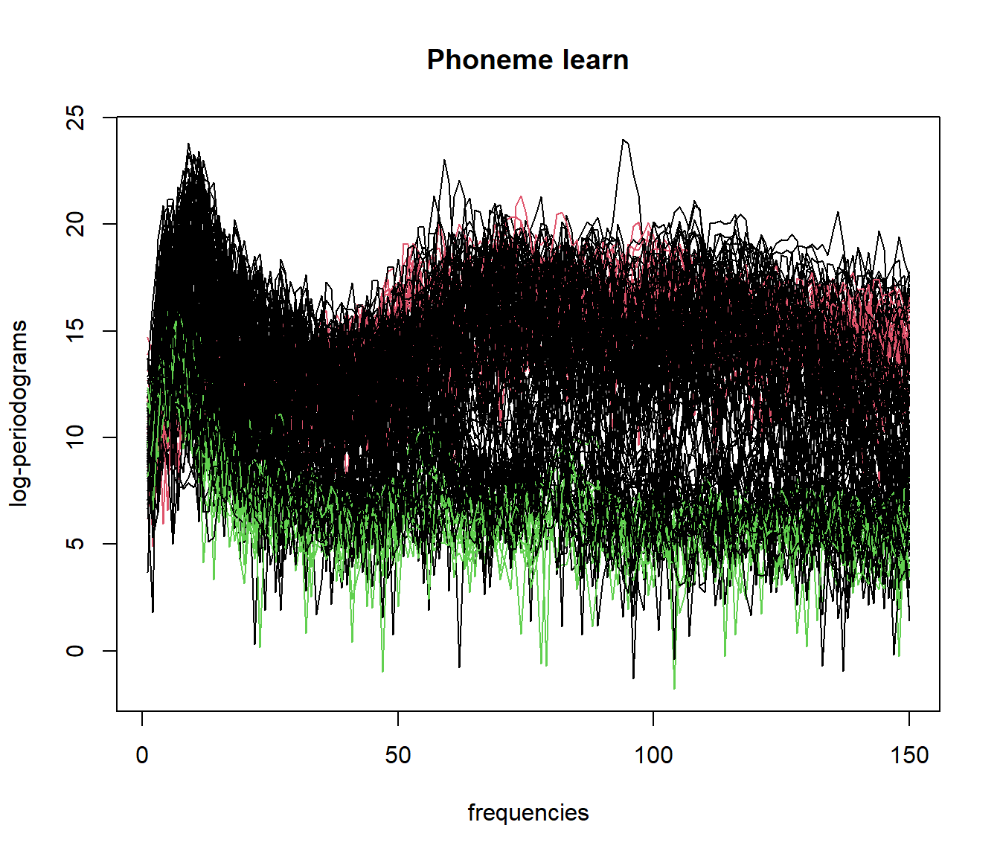
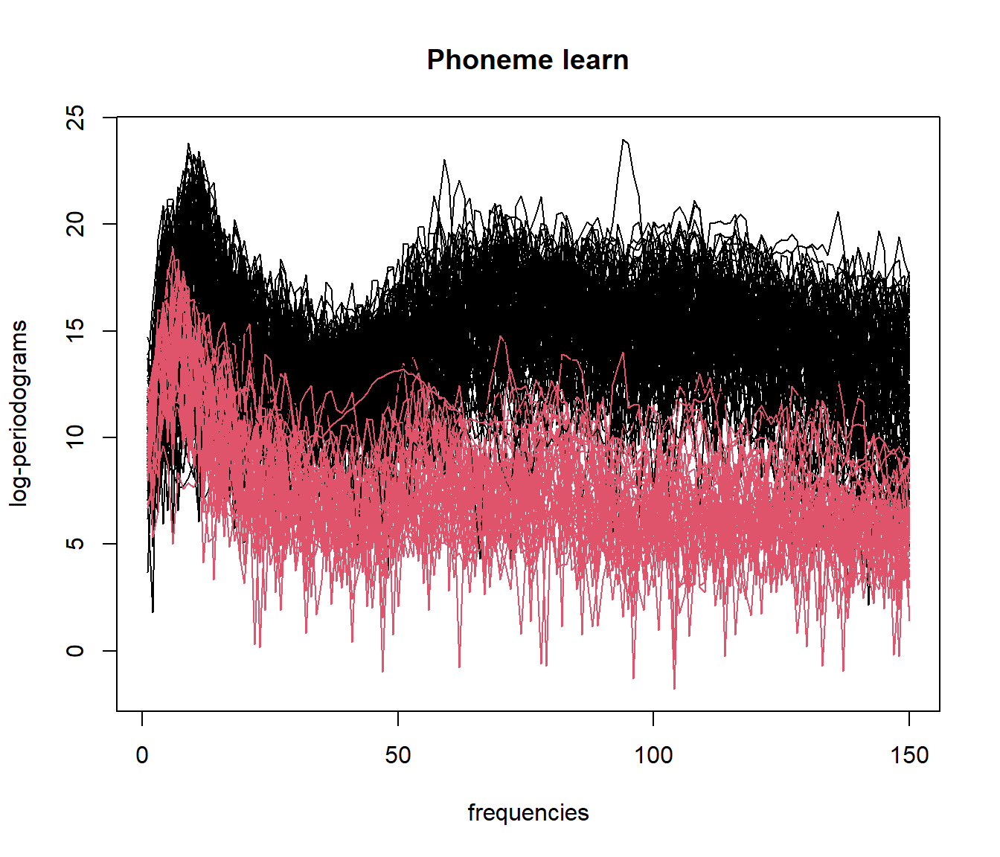
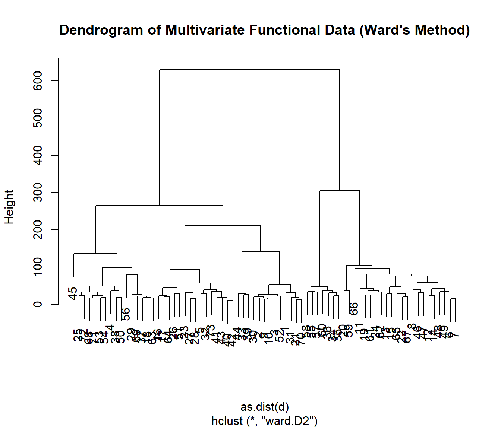
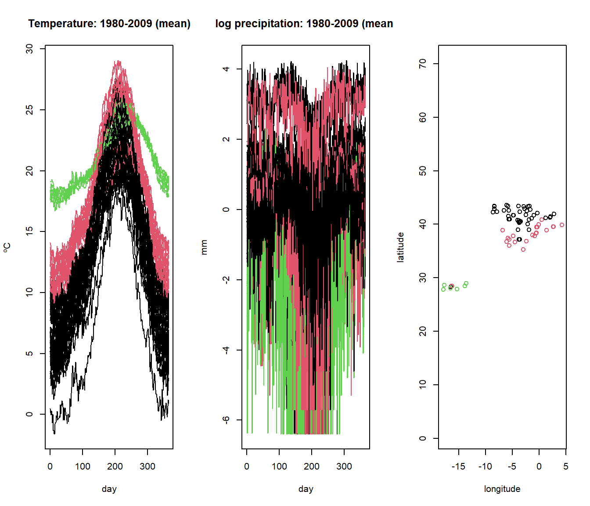
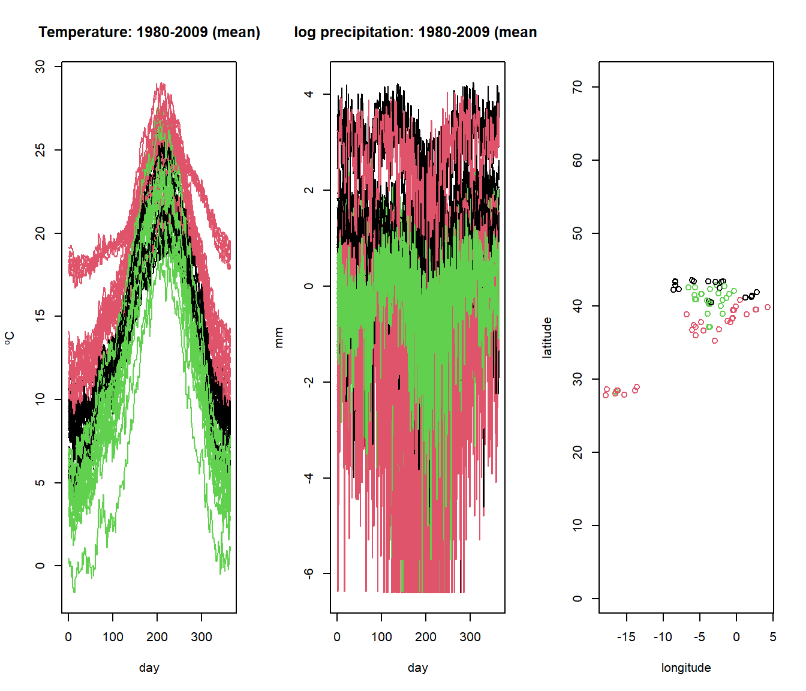

Chapter 5 Functional Clustering
Clustering is a method of exploratory analysis used to identify patterns in data by grouping similar elements together, ensuring that the resulting groups are as distinct as possible from one another. In addition to data analysis, clustering can be used to detect outliers, recognize patterns, and generate hypotheses about the underlying population.
When working with functional data, traditional clustering methods can be adapted by incorporating notions of distance between functions or curves. This section introduces the concepts and tools available for functional data clustering using the fda.clust package.
5.1 R Packages for Clustering
Here is a list of popular R packages for clustering:
- cluster: General-purpose clustering methods, including k-means, PAM, and hierarchical clustering.
- factoextra: Visualization and interpretation of clustering results.
- fpc: Additional methods for clustering and cluster validation.
- mclust: Model-based clustering, classification, and density estimation.
- NbClust: Determination of the optimal number of clusters.
- clustertend: Check clustering tendency of a dataset.
- dendextend: Visualization and adjustment of dendrograms.
- clValid: Cluster validation statistics.
- dbscan: Density-based spatial clustering of applications with noise (DBSCAN).
- tclust: Trimmed k-means and clustering methods for robust statistics.
- fanny: Fuzzy clustering methods.
5.2 R Packages for Clustering Functional Data
Here is a list of R packages specifically for clustering functional data:
- fdacluster: Implements k-means, hierarchical agglomerative, and DBSCAN clustering methods for functional data, allowing for the joint alignment and clustering of curves.
- fda.usc: Methods for functional data analysis, including clustering of functional data.
- fda: Functional Data Analysis tools, with clustering capabilities.
- fda.clust: Clustering of functional data using methods such as k-means and hierarchical clustering.
- funHDDC: Mixture models for high-dimensional functional data.
- FDboost: Boosting methods for functional data, which can be used for clustering.
- funFEM: Clustering functional data by modeling the curves within a common and discriminative functional subspace.
- funLBM: Model-based co-clustering of functional data.
- fdasrvf: Functional data analysis with square-root velocity framework (SRVF) and clustering.
- funcharts: Visual tools for functional clustering and data analysis.
- ROpenFDA: Tools for FDA data analysis, which can be used for functional clustering.
5.3 K-Means Clustering for Functional Data
K-means is one of the most popular clustering methods due to its simplicity and efficiency. The goal is to partition the data into \(k\) groups in such a way that the within-group distances between points and their group center (centroid) are minimized.
The optimization problem can be formulated as follows:
\[ \min_{\{m_1, \dots, m_k\}} \sum_{j=1}^k \sum_{\mathbf{x}_i\in C_j} \| \mathbf{x}_i - m_j \|^2 \]
Where \(m_j\) represents the centroid of cluster \(C_j\), and the goal is to minimize the sum of squared distances between each point \(\mathbf{x}_i\) in cluster \(C_j\) and its corresponding centroid \(m_j\).
The K-means algorithm follows these steps:
- Initialization: Select \(k\) initial centroids (randomly or using a heuristic).
- Assignment: Assign each data point to the cluster with the nearest centroid.
- Update: Recompute the centroids as the mean of all points assigned to the cluster.
- Convergence: Repeat steps 2 and 3 until the centroids no longer change.
However, some limitations or considerations should be noted:
- Choice of k: The number of clusters \(k\) must be specified beforehand.
- Local optima: The algorithm can converge to local optima depending on the initialization.
- Cluster size: If a cluster size is too small, it may require restarting the algorithm.
To address the problem of choosing \(k\), the elbow method is commonly used, where the within-group sum of squares is plotted for different values of \(k\) and the “elbow” point is selected as the optimal number of clusters.
The fda.clust package provides tools to perform K-means clustering for functional data. The goal is to cluster curves instead of points, and the package allows for several initialization options:
- ncl = NULL: Random initialization with 2 groups.
- ncl = integer: Number of clusters to form, and initial centers are selected automatically.
- ncl = vector of integers: Specifies the indices of initial cluster centers.
- ncl = fdata object: Uses the provided functional data as the initial cluster centers.
The main function for K-means clustering in fda.clust returns:
- cluster: Indices of the groups assigned to each observation.
- centers: Functional data objects representing the centers of the clusters.
See an example of Functional Data Clustering
data(phoneme)
mlearn <- phoneme$learn[1:150, ]
ylearn <- as.numeric(phoneme$classlearn[1:150])
# Perform K-means clustering on functional data
out.fd1 <- fda.usc:::kmeans.fd(mlearn, ncl=c(1, 51, 101)) 

## ylearn
## 1 2 3
## 1 50 10 3
## 2 0 40 1
## 3 0 0 465.4 Functional Data Clustering with DBSCAN (fdbscan)
DBSCAN (Density-Based Spatial Clustering of Applications with Noise) identifies clusters of points in regions of high density, separated by regions of low density. It defines clusters based on two parameters:
- \(\varepsilon\): Maximum distance between two points to be considered neighbors.
- \(\delta\): Minimum number of points required to form a dense region.
Algorithm
- Select a random unvisited point and compute its neighborhood \(N(\mathbf{x}_i)\).
- If \(|N(\mathbf{x}_i)| \ge \delta\), mark it as a core point and form a cluster by including its neighbors.
- Expand the cluster by adding points that are density-reachable from the core points.
- If \(|N(\mathbf{x}_i)| < \delta\), mark the point as noise.
See example of Functional Data Clustering using fdbscan
library(fda.clust)
# Load functional data
set.seed(123)
data(phoneme)
mlearn <- phoneme$learn[1:150, ]
# Optimize parameters for fdbscan
o <- optim.fdbscan(mlearn,
eps= seq(5, 45, by = 5),
minPts = seq(5, 45, by =5))
# Perform DBSCAN clustering
result_fdbscan <- fdbscan(mlearn,
eps = o$optimal$eps,
minPts = o$optimal$minPts)
# Plot the clustering results
par(mfrow=c(1,1))
plot(mlearn, col = result_fdbscan$cluster+1)
##
## 0 1 2
## 113 24 135.5 Functional Data Clustering with Mean Shift (fmeanshift)
Mean-Shift clustering is a non-parametric clustering algorithm based on density. It identifies areas of high data density as cluster centers. The mean shift vector is calculated as:
\[ \mathbf{x}_j^{(t+1)} = \mathbf{x}_j^{(t)} - \mathrm{m} \left( \mathbf{x}_j^{(t)} \right) \]
Where the mean shift vector \(\mathrm{m}(\mathbf{x}_j^{(t)})\) is given by:
\[ \mathrm{m} \left( \mathbf{x}_j^{(t)} \right) = \frac{ \sum_{\mathbf{x}_i \in N(\mathbf{x}_j^{(t)})} \mathbf{x}_i \cdot \mathrm{K}_h \left( \mathbf{x}_i - \mathbf{x}_j^{(t)} \right) }{ \sum_{\mathbf{x}_i \in N(\mathbf{x}_j^{(t)})} \mathrm{K}_h \left( \mathbf{x}_i - \mathbf{x}_j^{(t)} \right) } \]
Example of Functional Data Clustering using fmeanshift
library(fda.clust)
# Load functional data
data(phoneme)
mlearn <- phoneme$learn[1:150, ]
# Perform mean shift clustering
set.seed(123)
result_fmeanshift <- fmeanshift(mlearn, h = 15) # h is the bandwidth parameter## Min. Dist. InterPares: 20.0270419183663
##
## 1 2
## 104 465.6 Multivariate Functional Data Clustering
When dealing with multivariate functional data, clustering can be performed using a multidimensional metric. The aim is to cluster multivariate functional observations, where each observation may have multiple functional components.
Two key approaches for multivariate functional clustering are:
- Hierarchical clustering using the
mfhclust()function from thefda.clustpackage, which combines information from multiple functional components. - K-means clustering for multivariate functional data using the
mfkmeans()function, which partitions the data into \(k\) clusters to minimize within-cluster variance.
5.6.1 Hierarchical Clustering with mfhclust()
The mfhclust() function performs hierarchical clustering on multivariate functional data. The following example demonstrates how to use mfhclust() with the Spanish weather dataset, which contains information on temperature and log-precipitation.
data(aemet, package = "fda.usc")
datos <- mfdata("temp"=aemet$temp, "logprec"=aemet$logprec)
# Perform hierarchical clustering using Ward's method
result <- mfhclust(datos, method = "ward.D2")
# Plot the dendrogram
plot(result, main = "Dendrogram of Multivariate Functional Data (Ward's Method)")
# Cut the dendrogram into 3 clusters
groups <- cutree(result, k = 3)
# Visualize the clustering results for the multivariate functional data
par(mfrow=c(1,3))
plot(aemet$temp, col=groups)
plot(aemet$logprec, col=groups)
plot(aemet$df[7:8], col=groups, asp=TRUE)
5.6.2 K-means Clustering with mfkmeans()
The mfkmeans() function performs k-means clustering for multivariate functional data. Similar to standard k-means, this approach aims to partition the multivariate functional data into \(k\) clusters by minimizing the within-cluster variance.
The following example demonstrates how to apply k-means clustering to the Spanish weather dataset using mfkmeans().
# Set the number of clusters
k <- 3
# Perform k-means clustering for multivariate functional data
set.seed(123) # Ensures reproducibility
result_kmeans <- mfkmeans(datos, ncl = k)
# Visualize the cluster assignments for the functional components
par(mfrow=c(1,3))
plot(aemet$temp, col=result_kmeans$cluster)
plot(aemet$logprec, col=result_kmeans$cluster)
plot(aemet$df[7:8], col=result_kmeans$cluster, asp=TRUE)
5.7 Cluster Validation Measures
5.7.1 Silhouette Index
The Silhouette Index \(IS_k\) measures the quality of the clusters. The formula is:
\[ IS_k = \frac{1}{n} \sum_{i=1}^n \frac{\mathrm{b}(\mathbf{x}_i) - \mathrm{a}(\mathbf{x}_i)}{\max \{ \mathrm{a}(\mathbf{x}_i), \mathrm{b}(\mathbf{x}_i) \}} \]
result_silhouette <- fda.clust::fclust.measures(mlearn, result_kmeans$cluster, index = "silhouette")
result_silhouette## [1] NA5.7.2 Dunn Index
The Dunn Index \(ID_k\) is given by:
\[ ID_k = \frac{\min_{i \neq j} \mathrm{d}(C_i, C_j)}{\max_{i} \mathrm{d}(C_i)} \]
result_dunn <- fda.clust::fclust.measures(mlearn, result_kmeans$cluster, index = "dunn")
result_dunn## [1] 0.14795445.7.3 Davies-Bouldin Index
The Davies-Bouldin index \(IDB_k\) is defined as:
\[ IDB_k = \frac{1}{K} \sum_{j=1}^K \max_{i \neq j} \left( \frac{\sigma_i + \sigma_j}{d(m_i, m_j)} \right) \]
result_db_index <- fda.clust::fclust.measures(mlearn, result_kmeans$cluster, index = "db")
result_db_index## [1] 6.0997865.7.4 Calinski-Harabasz Index
The Calinski-Harabasz index \(ICH_k\) is defined as:
\[ ICH_k = \frac{SS_M (n - k)}{SS_W (k - 1)} \]
result_ch_index <- fda.clust::fclust.measures(mlearn, result_kmeans$cluster, index = "ch")
result_ch_index## [1] 0.5357454The selection of the most appropriate measure depends on the shape, size, and separation of clusters.
Chapter references
- Bouveyron, C., Côme, E., & Jacques, J. (2014). The functional latent block model for the co-clustering of electricity consumption curves. Journal of the Royal Statistical Society: Series C (Applied Statistics), 63(3), 403-427.
- Centofanti, F., Vichi, M., & Vittadini, G. (2024). Sparse and smooth functional clustering (SaS-Funclust). Statistical Papers, 65(1), 1-26.
- Hartigan, J. A., & Wong, M. A. (1979). A k-means clustering algorithm. Applied Statistics, 28(1), 100-108.
- Kaufman, L., & Rousseeuw, P. J. (1990). Finding Groups in Data: An Introduction to Cluster Analysis. Wiley.
Funding and Financial Support
This research/work is part of the grants PID2020-113578RB-I00 and PID2023-147127OB-I00 “ERDF/EU”, funded by MCIN/AEI/10.13039/501100011033/. It has also been supported by the Xunta de Galicia (Grupos de Referencia Competitiva ED431C-2024/14) and by CITIC as a center accredited for excellence within the Galician University System and a member of the CIGUS Network, receives subsidies from the Department of Education, Science, Universities, and Vocational Training of the Xunta de Galicia. Additionally, it is co-financed by the EU through the FEDER Galicia 2021-27 operational program (Ref. ED431G 2023/01).